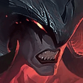

核心裝備
 星蝕
星蝕厄薩斯很容易用技能接普攻觸發，提供爆發與護盾，適合短換血後再拉開。
 三相之力
三相之力技能頻率高，能反覆觸發咒刃；生命與技能加速也符合半坦打法。
 席利妲咒怨
席利妲咒怨提高護甲穿透並讓技能更容易黏住目標，對高護甲前排尤其有效。
 死亡之舞
死亡之舞把部分爆發延後，擊殺助攻後回復生命，能把大絕期間的續航優勢放大。
 守護天使
守護天使後期進場失誤仍有一次復活機會，避免被五人集火直接結束團戰。

Aatrox · 甜蜜點範圍輸出／續航型前排戰士
先用 1 技第一、二段壓走位，不要為了第三段硬衝五人。敵方控制交掉後再開大絕進場，3 技主要用來調整甜蜜點位置；每次能打到外圈，比單純把技能全丟出去更重要。
本站評級理由：厄薩斯在狹窄單線很容易用 1 技外圈同時命中多人，拉扯成功後靠被動、3 技全能吸血與大絕延長戰鬥。弱點是必須貼近且很吃甜蜜點命中率，一旦被重創或連續控制，續航會明顯下降。
近期官方標準 ARAM 未列厄薩斯新的百分比修正，本站維持 100%／100%；不套用舊 Hextech／AAA ARAM 專屬數值。6.1f 有一般峽谷技能調整。
厄薩斯很容易用技能接普攻觸發，提供爆發與護盾，適合短換血後再拉開。
技能頻率高，能反覆觸發咒刃；生命與技能加速也符合半坦打法。
提高護甲穿透並讓技能更容易黏住目標，對高護甲前排尤其有效。
把部分爆發延後，擊殺助攻後回復生命，能把大絕期間的續航優勢放大。
後期進場失誤仍有一次復活機會，避免被五人集火直接結束團戰。

物理普攻多時優先，提高正面承傷。

三級鞋進一步補正面耐久；控制與法傷高則改水星系。

多段 1 技與普攻很快疊層，長團戰能同時提升輸出與續航。

甜蜜點擊飛命中後補護盾，進場更穩。

ARAM 持續消耗環境能穩定補回血線。

面對連續控制時提高韌性與生存。

3 技位移後能補額外傷害，符合連段節奏。

用來調整第三段 1 技甜蜜點、追擊或撤出危險區。

大絕期間維持貼身距離，避免被風箏。
1 技 > 3 技 > 2 技
ARAM 開局三個基礎技能各點 1 級，之後主升 1 技、次升 3 技；大絕能點就點。
先用 1 技外圈安全換血，3 技留著修正落點；沒有大絕前不要把自己當主坦。
星蝕與三相成形後，先看敵方控制再決定是否開大。甜蜜點連續命中時才有足夠回復把團戰拖長。
以第二進場為主，等隊友先吃第一波技能。開大後盯後排但不要越過整隊；死亡之舞與守護天使讓你有更多容錯。
 黑色切割者
黑色切割者可替換三相，範圍技能快速疊減甲並提升團隊物理傷害。
 致死宣告
致死宣告需要重創時替換一件輸出裝。
 史特拉克手套
史特拉克手套可替換守護天使或穿透裝，提高第一輪生存。
看遊戲卡片下方分類 → 點相同分類 → 看左側 S+／S／A。
一技能三段是主要輸出來源，技能傷害與冷卻增幅能直接放大持續作戰。
三技能可頻繁微位移修正甜蜜點，是身法類增幅的穩定觸發來源。
衝刺後的穿透、防禦與傷害能跟三技能反覆連動。
一技能甜蜜點擊飛與二技能拉回能觸發控制型增幅。
施放大絕無敵、保命重置與技能普攻循環都很適合厄薩斯。
大絕本就提供追擊能力，額外跑速能提高甜蜜點與黏人穩定度。
v80.10.0 ARAM A 第一批：厄薩斯以甜蜜點命中、續航與第二進場為核心；未誤套 Hextech／AAA ARAM 專屬百分比。
ARAM 使用獨立於召喚峽谷的資料集；本站會把官方模式平衡、單線 5v5 特性與出裝／符文適配分開判斷，而不是直接複製峽谷配置。